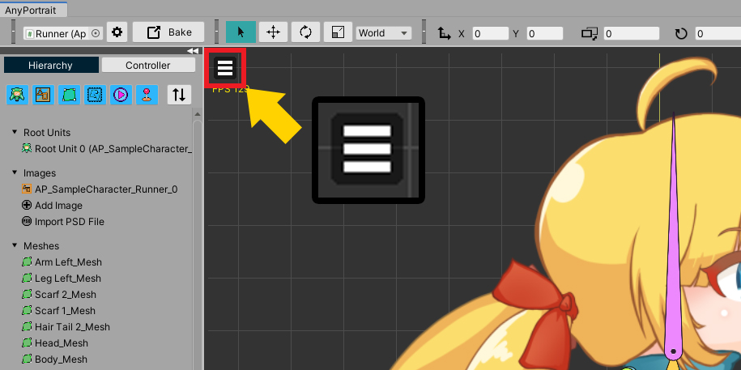

AnyPortrait > Manual > View menu and Status icons
View menu and Status icons
1.3.0

View Menu added in AnyPortrait v1.3.0 has functions to control how objects and other elements are displayed in the workspace.
This page briefly explains what functions are available in the View menu, and also explains the newly added Status Icons.
View Menu

There is a menu button in the upper left corner of the workspace.
Clicking this button opens the View Menu.

This is the View Menu.
There are various items related to the workspace, and if there is a shortcut, they are displayed together.
Some menus may not be visible depending on the currently selected object type.
Some functions are toggle type, so if you press it again while it is active, it will be deactivated.
1. Show FPS, Show Statistics, Show How to Edit : Display information related to the editor or object in the workspace.
2. Maximize Workspace : Maximize the workspace.
3. Show Meshes : Meshes are shown in the workspace.
4. Show Bones, Show Bones' Outline : Bones are shown in the workspace. You can set to show only the outline.
5. Enable Physics : The physics material and Jiggle Bone works.
6. Onion Skin : These are the menus related to Onion Skin. (Related page)
7. Edit Mode Option : These are the menus related to Edit Mode Options. (Related Page)
8. Visibility Preset : These are the menus related to Visibility Preset. (Related Page)
9. Rotoscoping : These are the menus related to Rotoscoping. (Related Page)

This is a description of some of the functions of the View menu.
(1) When Show FPS is turned on, FPS (Frames per Second) indicating the execution performance of the current editor is displayed.
(2) When Show Statistics is turned on, the main data of the selected target are displayed.
(3) When Show How to Edit is turned on, a description of the input method in the work screen that requires special input appears briefly.
For other functions, please refer to the related pages.
Status icons

(1) These are Status Icons added in AnyPortrait v1.3.0.
(2) The status of how objects are displayed and edited in the current workspace is displayed in the form of an icon.
(3) If you place the mouse over the icon, a tool tip for the corresponding status is displayed. If there is a shortcut, it is displayed as well.

These are the status icons.
The icons are grouped for "display method" and "edit mode" respectively.
The icons on the left indicate information on the display method.
Some of the icons do not appear in the default state and only appear in special cases.
(1) This icon appears when CPU Optimizer to Prevent Heat is turned on for laptop users. This function can be turned on in Setting Dialog.
(2) This icon appears when Show Meshes is turned off and meshes are hidden.
(3) This icon appears when you turn off Show Bones or set only outlines to be shown. It means "bones are not visible" and "only the outlines of the bone are visible", respectively.
(4) This icon appears when Enable Physics is turned off and the physics effect does not work.
(5) This icon appears when Onion Skin is turned on.
(6) This icon appears when Visibility Preset is turned on.
(7) This icon appears when Rotoscoping is turned on.
The icons on the right indicate Status in Edit Mode.
For more information, refer to the Related Page.
(8) This is the status for Preview result. It means "preview bone and color", "preview bone" and "preview color" respectively.
(9) These icons indicate whether "only the selected modifier works" or "other modifiers work together".
(10) Status for Selection Lock. It means "other objects can't be selected", "other objects can be selected", and "only objects included in the modifier can be selected".